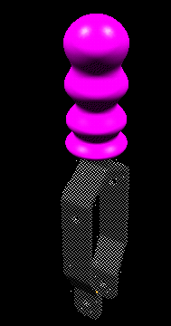
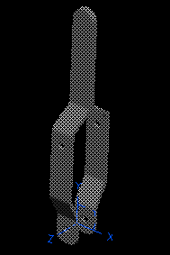
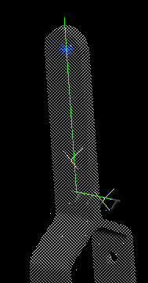
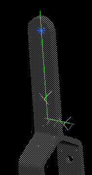
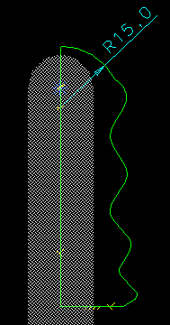
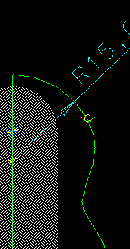
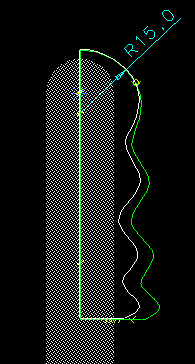
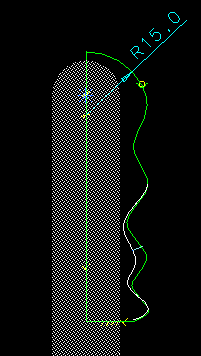
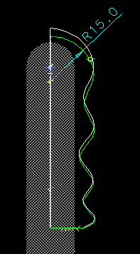

Technical Marketing MS5 Vignettes - VGx Clamp Grip
This VGx example shows how the VGx and Variational Shape Design helps
the user scuplt a rubber finger grip on a Toggle Clamp handle. Note that
the spline will remain smooth and maintain the curvature constraint.
Model file :- VGx_vignettes.mf*
Before

After

Begin vignette



Get the Clamp Handle form bin VSD to the workbench.
SIP on the X,Y Plane of the Coordinate system
Change the part to be 70% translucent.
 

Show the front view.
Focus on the arc center point.
Add the 2 lines, starting at the bottom right.


Make the vertical line colinear with the focused point.
Add an arc centered on the vertical line, radius approx 15mm
Trim the vertical line to meet the arc.


Add a spline from the arc end to the line end, using 6-7 through points.
NOTE:- use the control key to suppress the Navigator for the through
points.


Add a Curvature matching constraint between the arc and the spline.




Drag the spline to suit.

Revolve the section about the vertical line, 360 degrees and protude.
Tech Tips
.